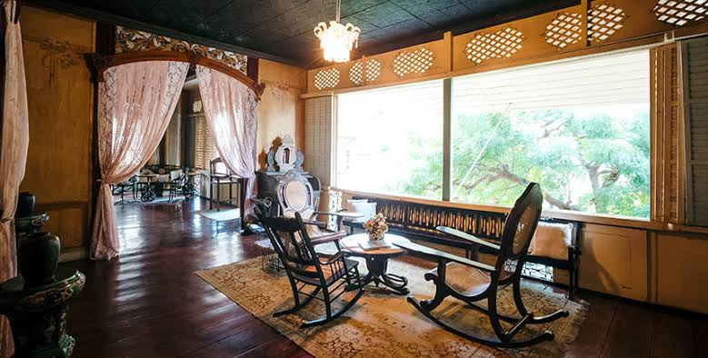
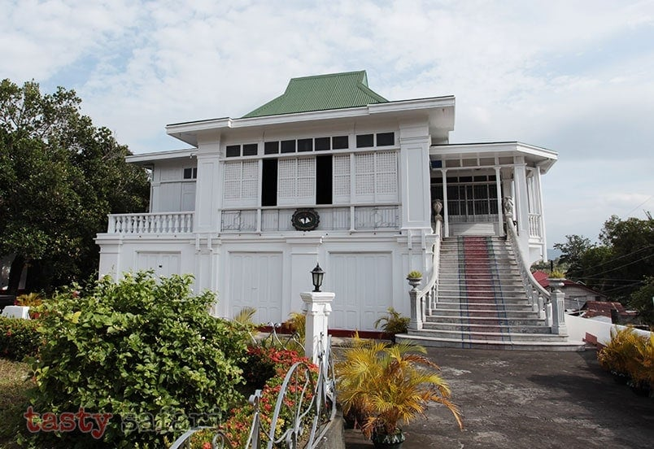
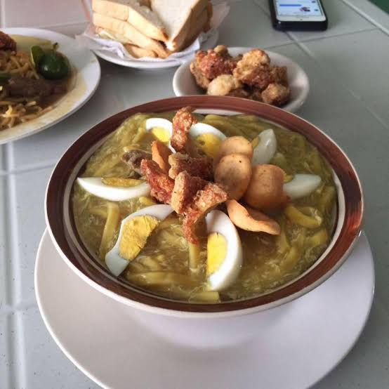

<html>


<width="350" height="60"/>

<head>
<style>
img {
  width: 100%;
}
</style>
</head>
<body>

<!-- The form -->
<form class="example" action="action_page.php">
  <input type="text" placeholder="Search.." name="search">
  <button type="submit"><i class="fa fa-search"></i></button>
</form>

<h1 style="text-align: center" "family-font:cursive"> TRAVEL TAAL </h1>


<p style="font-family:arial;">
              Batangas is among the country’s foremost tourist destinations because, just like what the Provincial Tourism tagline says, “It’s all here, it’s so near!”.
One can get the joy of exploring the many facets of Batangas – its natural attractions, religious sites, sports and recreation destinations, places for various gastronomic adventures, and historical and cultural sites. On the last mentioned item, Taal reigns on top of the list.

Prepare for a meaningful journey to what is also known as the Balisong and Barong Tagalog Capital of the Philippines, the Heritage Town that is Taal! </p>


<pre>

<h3 style="font-family:arial;">List of Places to Visit</h3></pre>


<h2 style="font-family:cursive;">Taal Basilica</h2>


<width="300" height="200"/>
<p style="font-family:arial;">

The Taal Basilica,founded at 1572, canonically known as the Minor Basilica of Saint Martin of Tours, is a Minor Basilica in the town of Taal, Batangas in the Philippines, within the Archdiocese of Lipa. It is considered to be the largest church in the Philippines and in Asia, standing 88.6 metres long and 48 metres wide.</p>

<p>Two distinct features of the basilica are the façade, which will remind you of the St. Peter’s Basilica in Rome, and the silver tabernacle, claimed to be the only one of its kind in the country.

Often called Taal Basilica, the church is among the most visited destinations of people from various places during the Lenten season. This church is also popular among couples who will tie the knot.</p>


<width="300" height="200"/>
<hr>


<pre>
<h2 style="font-family:cursive;">Galleria Taal</h2>

<width="300" height="200"/>

<width="300" height="200"/>
</pre>


<p style="font-family:arial;">
This privately owned museum displays a collection of antique cameras (dating from the 1800's) and early Philippine photographs from the Spanish and American colonial eras.There are also photographss of Manila during and after the Japanese occupation, the Marcos era and up to the EDSA revolution.</p>
<p>It is open Tuesday to Sunday, from 8:00 am to 5 pm, with an entrance fee of PHP100 for adults and PHP50 for students.</p>
<hr>


<pre>
<h2 style="font-family:cursive;">Casa Villavicencio</h2>

<width="300" height="200"/>

<width="300" height="200"/>
</pre>

<p style="font-family:arial;">
The Casa Villavicencio or Casa V is an old Spanish Colonial Era house in Taal, Batangas, Philippines. Built in 1850, the house was given to Don Eulalio Villavicencio upon the death of his parents.</p>
<p>Entrance fee is P70 per head, P100 if inclusive of the snacks. Snacks are also sometimes served at the garden.</p>

<hr>


<pre>
<h2 style="font-family:cursive;">Shrine of Our Lady of Caysasay</h2>


</pre>

<p style="font-family:arial;">
The Archdiocesan Shrine of Our Lady of Caysasay is a coral-hewn chapel in Barrio Caysasay in Taal, Batangas belonging to the Archdiocese of Lipa in the Philippines. It was built in 1639 by Fr. Alonso Rodriguez to replace a temporary structure built in 1611.</p>
<p>Considered as one of the oldest images of the Blessed Virgin Mary in the Philippines, this icon of Our Lady of Caysasay is visited by countless devotees and pilgrims all over the country all year through and not only during her feast day in December.</p3>

<hr>

<h2 style="font-family:cursive;">San Lorenzo Ruiz Steps</h2>


<p style="font-family:arial;">Originally known as hagdan-hagdan, the San Lorenzo Steps has been renamed in commemoration of the first saint of the country. These one hundred twenty-five steps connect the Wells of Sta. Lucia and the Caysasay Shrine to the town’s poblacion.</p>

<hr>


<h2 style="font-family:cursive;">Villa Turtuga</h2>


<p style="font-family:arial;">
Villa Tortuga is one of those old ancestral homes along the town of Taal. According to them the name "Tortuga" was derived from the word "Turtle" because there are a lot of turtles coming from a nearby river. It sits along the banks of Pansipit River which is noted for being the sole drainage outlet of the nearby Taal Lake.</p>
<p>The Entrance fee is ₱50.</p>

<hr>


<h2 style="font-family:cursive;">Museo nina Marcela Mariño at Felipe Agoncillo</h2>





<p style="font-family:arial;">
The Agoncillo–Mariño House is an old Spanish Colonial Era house in Taal, Batangas, Philippines. The house is one of the national shrines under the administration of the National Historical Commission of the Philippines (NHCP) with the purpose of memorializing the contribution of Marcela Mariño de Agoncillo in making the national flag of the Philippines and the deeds and ideals of Felipe Agoncillo y Encarnación, her husband, who came to be known as the "First Filipino Diplomat."</p>
<p>The Entrance Fee is ₱80.

<hr>


<h2 style="font-family:cursive;">Casa Gahol/Galleria Orlina</h2>


<p style:"font-family:arial;">
Casa Gahol / Galleria Orlina – This is the ancestral home of famous Filipino glass sculptor artist, Ramon Orlina. It houses an art gallery on the ground floor which features works of many talented artists. The back patio is a cozy café on the lovely Pansipit riverbank.</p>


<hr>


<h2 style="font-family:cursive;">Don Leon Apacible Museum</h2>


<p style:font-family:arial;">

Leon and Galicano Apacible, who hailed from Balayan, Batangas, both aspired to see their country liberated from colonial oppression and able to experience the social and economic progress of a sovereign nation. Devoted to each other, Leon and Galicano joined the struggle for Philippine independence, aware of the difficulties this imposed on them and their families.
The Leon and Galicano Apacible Museum consists of five galleries:<br>
Gallery 1: Batangueños in Revolution<br>
Gallery 2: Life of Leon Apacible<br>
Gallery 3: The Leon Apacible House<br>
Gallery 4: Life of Galicano Apacible<br>
Gallery 5: War-time Diplomacy and Public Service<br>
</p>

<hr>


<h2 style="font-family:cursive;">Taal Public Market</h2>


<p style:font-style:arial;">
A tour in Taal will never be complete without a visit to the local market.
Witness the art of handmade embroidery at this place. You can also find barong tagalog and hand-embroidered wedding gowns at Taal market.</p>
<p>The town’s marketplace or palengke where you can buy the local products, like delicacies and Burdang Taal items (native embroidery).</p>


<h4 style="text-align:center" "family-font:arial"> Tapa </h4>


<h4 style="text-align:center" "family-font:arial">Empanada</h4>


<h4 style="text-align:center" "family-font:arial"> Lomi </h4>


<h4 style="text-align:center" "family-font:arial"> Longganisa </h4>


<h4 style="text-align:center" "family-font:arial"> Halo-Halo </h4>


<h4 style="text-align:center" "family-font:arial">Panutsa and other foods </h4>


<h4 style="text-align:center" "family-font:arial"> And Also Barong and Saya.</h4>

<hr>


<h4 style="font-family:sans-serif;">Follow us on:</h4>


<a href="http://www.facebok.com">
   	
   </a>

</body>
</html>